Auteur Jan-Joost Kroon is al meer dan 25 jaar gefascineerd door de Italiaanse maffia. Vanuit zijn bedrijfskundige achtergrond en werk als organisatieadviseur ziet hij dat ‘normale’ bedrijven wel iets zouden kunnen leren van de werkwijze van de maffia. Dat leidde tot het schrijven van zijn boek ‘Van Capo tot CEO’. Jan-Joost legt uit: "Je zou het misschien niet direct verwachten, maar alle bedrijven kunnen leren van de Italiaanse maffia."
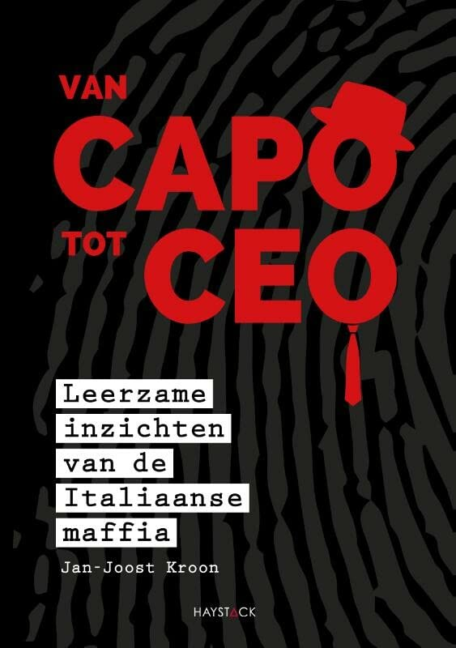
Op 15 maart 2022 bracht Jan-Joost zijn eerste boek uit: 'Van Capo tot CEO'. Het boek is uitgegeven door de uitgeverij Haystack, die een geschiedenis heeft in het uitgeven van managementboeken. Het boek trok snel de aandacht en stond 24 dagen lang op nummer 1 in de lijst van managementboeken. Daarnaast werd het boek genomineerd voor de titel van Managementboek van het Jaar. Het populaire boek van Jan-Joost heeft 24 dagen lang de top gedomineerd. Inmiddels is het boek meer dan 1000 keer verkocht en heeft het de titel 'bestseller' gekregen. De meningen die over het boek naar buiten kwamen, waren stuk voor stuk zeer positief, en niemand had iets negatiefs op te merken.
Van Capo tot Ceo -- Het boek
Van Capo tot Ceo
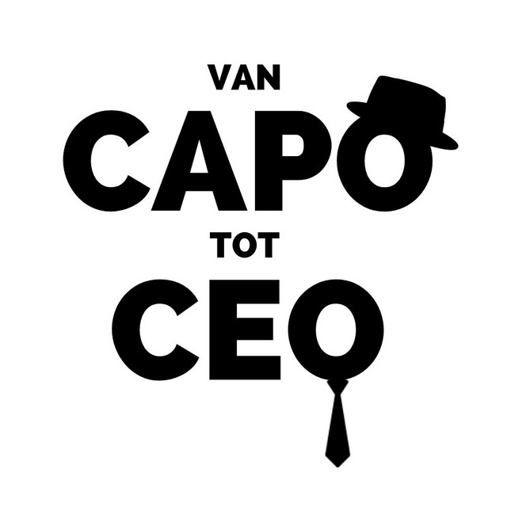
Jan-Joost is altijd al gefascineerd geweest door de wereld van de Italiaanse maffia. In mei 2020 besloot hij zijn passie te delen met de wereld door zijn eigen podcast te starten. In deze podcast neemt hij zijn luisteraars mee op een boeiende reis door het mysterieuze rijk van de Italiaanse maffia, waarbij hij gedetailleerd vertelt over hun tactieken en strategieën. Daarnaast laat Jan-Joost geen enkel onderwerp en bespreekt hij openlijk en eerlijk de verschillen en overeenkomsten tussen de werkwijzen van de Italiaanse maffia en Nederlandse bedrijven. "normale bedrijven kunnen daadwerkelijk kan leren van de dingen die de Italiaanse maffia ook doet, Want als je alle criminele aspecten van de maffia buiten beschouwing laat (want die hebben ze natuurlijk, en die zijn verwerpelijk), doen ze ook dingen best wel goed, slim en handig." - Jan-Joost Kroon
De podcast 'Van Capo tot CEO' heeft 1 gast, Janine Zoer: Janine is expert op het gebied van de veranderpsychologie van C.G. Jung. Inmiddels heeft zij veel ervaring met het creëren van draagvlak en bewustwording bij organisatieveranderingen. Zij helpt bedrijven te groeien met behoud van de juiste mensen. Dit doet zij o.a. op basis van haar archetypische kennis. In essentie is zij een analytische vernieuwer.
Per Capi
Op 26 mei 2023 lanceerde Jan-Joost een nieuw bedrijf: Per Capi. Vanuit Per Capi organiseert Jan-Joost programma’s, workshops en keynotes. Alle programma’s, workshops en keynotes zijn gebaseerd op zijn bestseller 'Van Capo tot CEO', waarin hij de ijzersterke bedrijfsvoering van de Italiaanse maffia gebruikt als metafoor. Op 29 mei 2023 lanceerde het bedrijf ook een nieuwe podcast: Il Capitano. Deze podcast was niet gericht op het boek, maar op individuen. Jan-Joost nodigt in elke aflevering een nieuwe persoon uit, iemand met een specifieke functie. Samen bespreken ze de organisatie en leiderschapstijl van de gast.
De gasten van de podcast:
(Druk op de namen om naar de podcast te gaan)
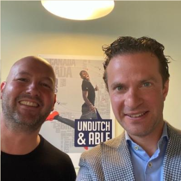
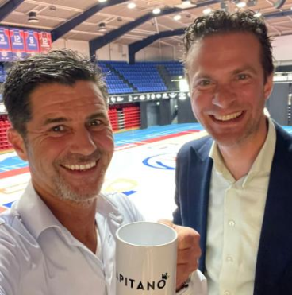
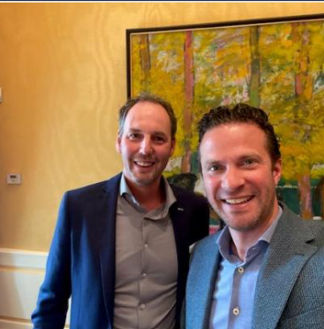
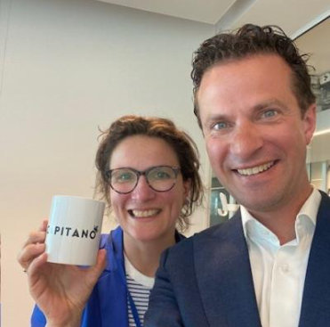
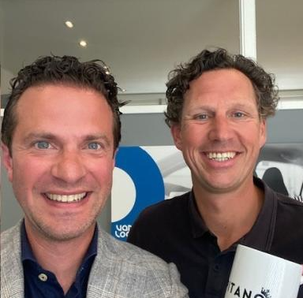
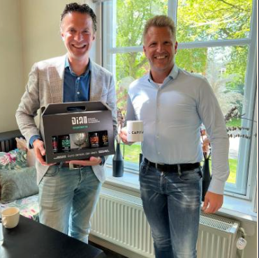
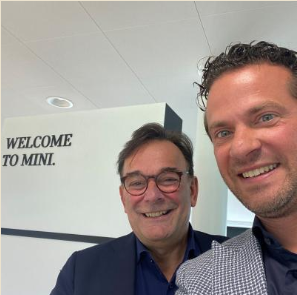
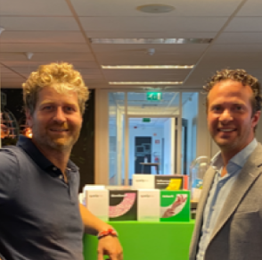
Presentatie en Workshop
Het onderwerp dat Jan-Joost aansnijdt is uniek: de bedrijfsvoering van een bekende Italiaanse multinational vergelijken met je eigen organisatie. Hij komt graag langs om een presentatie te geven tijdens een evenement of een workshop te verzorgen voor teams van jouw organisatie.
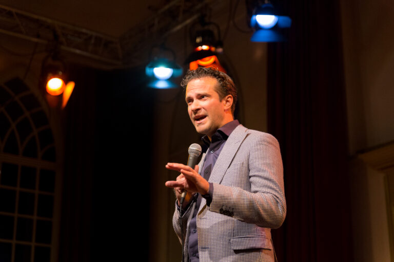
Presentatie door Jan-Joost Een écht ander verhaal op je (klant) event, seminar of voor je eigen medewerkers? Vraag Jan-Joost dan absoluut hiervoor. Zijn verhaal is op alle fronten anders en vernieuwend. Kijk, luister en leer vanuit een heel ander perspectief en laat je verrassen. De mogenlijkheden bespreken? Klik hier
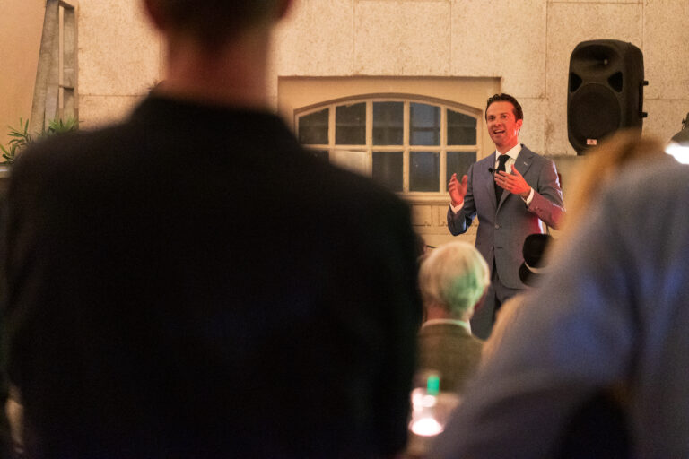
Workshop door Jan-Joost Perfect voor managementteams en directieteams Met een specifiek onderwerp aan de slag waar uw organisatie zich wil ontwikkelen en daarbij inspiratie zoeken uit een heel ander perspectief? Vraag Jan-Joost voor zijn input voor een geslaagde en verfrissende workshop. De mogenlijkheden bespreken? Klik hier
Verwachtingen van Jan-Joost als spreker
Over mij
Ik ben Johannis Jan Cornelis Kroon, geboren op 10 juni 1982. Mijn passie voor de Italiaanse maffia en de iconische Al Pacino begon meer dan 25 jaar geleden. Het werd aangewakkerd door films zoals 'The Sopranos' en 'The Godfather'. Deze fascinatie dreef me ertoe om dieper in dit onderwerp te duiken en maffia-boeken te gaan lezen en meer. Deze reis leidde me niet alleen door de wereld van de maffia, maar bracht me ook in de richting van bedrijfsvoering. Ik ben ervan overtuigd dat we veel kunnen leren door de criminele aspecten van de maffia terzijde te schuiven en ons te concentreren op de bedrijfsmatige kant ervan. Met mijn meer dan 15 jaar ervaring als organisatieadviseur heb ik kunnen zien hoe deze inzichten bedrijven kunnen helpen om naar nieuwe hoogten te stijgen.